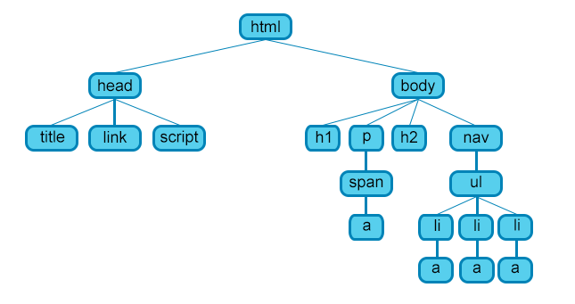

Анатомия HTML документа
Мы завершили изучение основ отдельных HTML элементов, но они не очень полезны сами по себе. Теперь посмотрим, как отдельные элементы объединяются в целую HTML страницу.
<!DOCTYPE>
"Живой стандарт"Элемент <!DOCTYPE> ( доктайп) предназначен для указания типа текущего документа — DTD (document type definition, описание типа документа). Это необходимо, чтобы браузер понимал, согласно какому стандарту отображать текущую веб-страницу, поскольку HTML существует в нескольких версиях. Запись <!DOCTYPE html> сообщает браузерам, что мы будем использовать последнюю версию HTML - это версия HTML5.
Синтаксис для HTML5
<!DOCTYPE html>
Закрывающий тег
Не требуется.
<html>
"Живой стандарт"Элемент < html>. Этот элемент является контейнером, который заключает в себе всё содержимое веб-страницы, включая элементы < head> и < body>. Как правило, идёт в документе вторым, после определения типа документа (Document Type Definition, DTD), устанавливаемого через <!DOCTYPE html>. Закрывающий тег < /html> всегда стоит в документе последним.
Синтаксис
<html>
...
</html>
Закрывающий тег
Обязателен.
Атрибуты
Атрибут lang указывает язык, который используется большей частью содержимого страницы.
Текст документа может быть набран как на одном языке, так и содержать вставки на других языках, которые могут различаться по своим правилам оформления текста. Например, для русского, немецкого и английского языка характерны разные кавычки, в которые берется цитата. Чтобы указать язык, на котором написан текст внутри текущего элемента и применяется атрибут lang. Браузер использует его значение для правильного отображения некоторых символов.
Синтаксис
lang="код языка"
Значения
По умолчанию используется значение "en", т.е. английский язык. Если мы используем русский язык для основного контента, следует указывать значение "ru"
<html lang="ru">
<head>
"Живой стандарт"Элемент <head> (от англ. head — голова) предназначен для хранения других элементов, цель которых — помочь браузеру в работе с данными. Также внутри контейнера <head> находятся метатеги, которые используются для хранения информации предназначенной для браузеров и поисковых систем. Например, механизмы поисковых систем обращаются к метатегам для получения описания сайта, ключевых слов и других данных.
Содержимое <head> не отображается напрямую на веб-странице, за исключением элемента <title>, который задаёт заголовок окна веб-страницы.
Синтаксис
<head>
...
</head>
Закрывающий тег
Обязателен.
<meta>
"Живой стандарт"Элемент <meta> (от англ. metadata — метаданные) определяет данные (они называются ещё метатеги), которые используются для хранения информации, предназначенной для браузеров и поисковых систем. Например, механизмы поисковых систем обращаются к метатегам для получения описания сайта, ключевых слов и других данных.
Существует множество разновидностей <meta>. Все они размещаются в контейнере <head>. Рассмотрим пока один.
<meta charset="utf-8"> Задает кодировку документа, которая указывает набор символов, которые в нём можно использовать.
"utf-8" — универсальный набор символов, который включает почти все символы со всех языков человечества. Страница в такой кодировке прекрасно отображает, как английские, так и японские символы.
Синтаксис
<head>
<meta>
</head>
Закрывающий тег
Не требуется.
<title>
"Живой стандарт"Элемент <title> (от англ. title — название, заголовок) - определяет заголовок документа. Он не является частью документа и не показывается напрямую на веб-странице. Текст заголовка отображается, как правило, на вкладке браузера. Длина заголовка должна быть не более 60 символов, чтобы полностью поместиться в заголовке. Допускается использовать только один <title> на документ и размещать его в контейнере <head>.

Синтаксис
<head>
<title> Заголовок </title>
</head>
Закрывающий тег
Обязателен.
<body>
"Живой стандарт"Элемент <body> (от англ. body — тело) предназначен для хранения содержимого веб-страницы (контента), отображаемого в окне браузера. Информацию, которую следует выводить в документе, следует располагать именно внутри контейнера <body>. К такой информации относится текст, изображения, теги, скрипты JavaScript и т. д.
Синтаксис
<body>
...
</body>
Закрывающий тег
Обязателен.
Объектная модель документа DOM
Язык HTML следует правилам, которые содержатся в файле объявления типа документа (Document Type Definition, или DOCTYPE). DOCTYPE определяет версию HTML и отвечает за корректное отображение веб-страницы браузером.
Элементы, находящиеся внутри элемента <html>, образуют дерево документа, так называемую объектную модель документа, DOM (document object model). При этом элемент <html> является корневым элементом.
Чтобы разобраться во взаимодействии элементов веб-страницы, необходимо рассмотреть так называемые «родственные отношения» между элементами. Отношения между множественными вложенными элементами подразделяются на родительские, дочерние и сестринские.
- Предок — элемент, который заключает в себе другие элементы. На рисунке предком для всех элементов является <html>. В то же время элемент <body> является предком для всех содержащихся в нем элементов: <h1>, <p>, <span>, <nav> и т.д.
- Потомок — элемент, расположенный внутри одного или более типов элементов. Например, <body> является потомком <html>, а элемент <p> является потомком одновременно для <body> и <html>.
- Родительский элемент — элемент, связанный с другими элементами более низкого уровня, и находящийся на дереве выше их. На рисунке <html> является родительским только для <head> и <body>. Элемент <p> является родительским только для <span>.
- Дочерний элемент — элемент, непосредственно подчиненный другому элементу более высокого уровня. На рисунке только элементы <h1>, <h2>, <p> и <nav> являются дочерними по отношению к <body>.
- Сестринский элемент — элемент, имеющий общий родительский элемент с рассматриваемым, так называемые элементы одного уровня. На рисунке <head> и <body> — элементы одного уровня, так же как и элементы <h1>, <h2> и <p> являются между собой сестринскими.